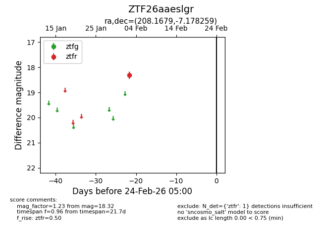
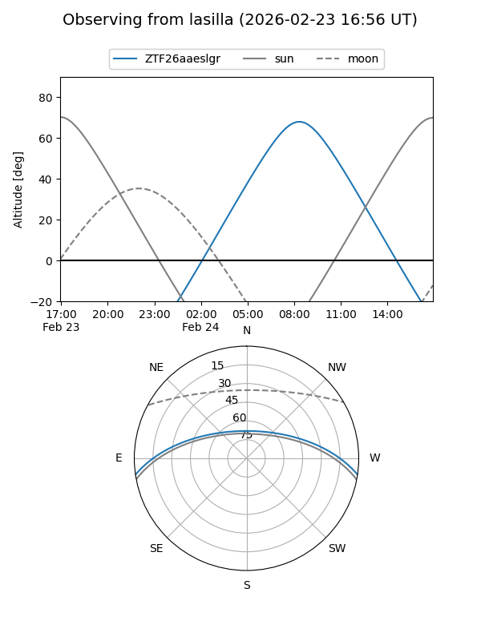
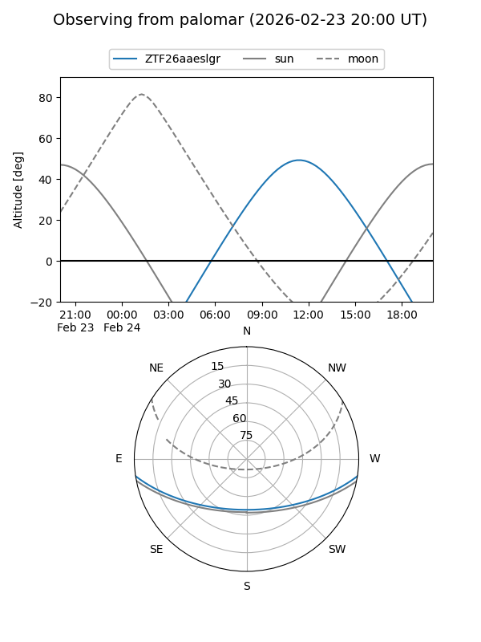

ZTF26aaeslgr
Target ZTF26aaeslgr at 2026-02-24 09:08
Aliases and brokers:
FINK: link
Lasair: link
ALeRCE: link
alt names
ZTF26aaeslgr (ztf,fink_ztf)
Coordinates:
equatorial (ra, dec) = 208.1679,-7.17826
equatorial (HMS+DMS) = 13:52:40.30,-07:10:41.73
galactic (l, b) = (328.4974,+52.62728)
Flags:
Photometry:
last ztfr=18.32
1 ztfr detections
Lightcurve

Visibility


Additional plots